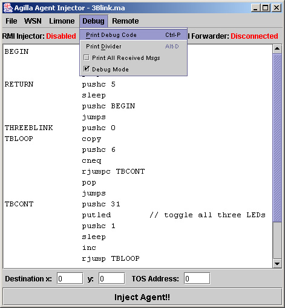
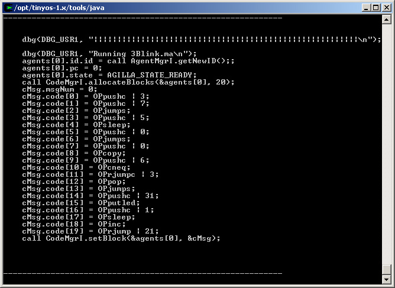
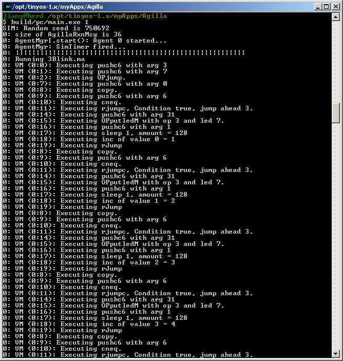
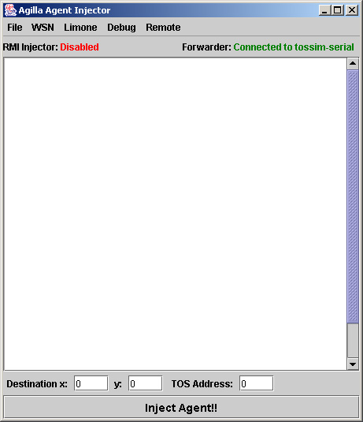

Last Updated on September 21, 2006 0:56 AM .
Agilla programs can be debugged and simulated using TOSSIM. There are two ways to do this: 1) using a default agent, or 2) via agent injection. When simulating an agent, the agent's execution trace is printed to the screen. This trace can be piped to a file for off-line analysis.
Agilla itself can be debugged by removing various subsystems.
A default agent simulation involves modifying $TOSROOT/contrib/wustl/apps/Agilla/components/AgentMgrM.nc to
automatically load an agent when the mote is turned on. The advantage
of this method
is it does not use the agent migration components, allowing you to
debug an agent even if the interface between the AgentInjector and
Agilla is broken. The
disadvantage is that you can only simulate one type of
agent at a time (unless you make further modifications
to
AgentMgrM).
To simulate Agilla using a default agent, first launch the agent
injector in "no
connect"
mode
using the following command:
$ java -Djava.security.policy=java.policy edu.wustl.mobilab.agilla.AgentInjector -nc
The Agent Injector GUI will appear. Open the agent you want to simulate. In the picture below, 3Blink is loaded.

Go to the Debug menu and select Print Debug Code. This will print some NesC code to the shell as shown below.

Copy the
code and open $TOSROOT/contrib/wustl/apps/Agilla/components/AgentMgrM.nc.
Search for "command result_t StdControl.start()".
Look for the line containing "if (TOS_LOCAL_ADDRESS ==
0)" and paste
the code within this if block. Then open $TOSROOT/contrib/wustl/apps/Agilla/Makefile.Agilla and set -DINCLUDE_DEFAULT_AGENT=1.
Compile Agilla by typing make pc. Then run the simulation:
$ build/pc/main.exe -b=0 -l=0 1
You should see the following output:

This shows the initialization and execution of the 3Blink agent. Each line starts with "0: VM (0:0):". The first integer is the mote ID, the second is the agent ID, and the third is the agent's program counter.
The Agent Injector can be used to inject agents into an Agilla network
being simulated by TOSSIM. First open $TOSROOT/contrib/wustl/apps/Agilla/components/AgentMgrM.nc and
find the line containing #define INCLUDE_DEFAULT_AGENT.
Make sure it is defined to be 0. This will prevent the
default agent
from
being
executed.
Compile Agilla for TOSSIM:
$ make pc
TOSSIM uses a different byte packing, requiring that the Java classes
encapsulating TOS active message be re-generated using mig.
Open $TOSROOT/contrib/wustl/tools/java/edu/wustl/mobilab/agilla/Makefile.Agilla
and add the following line within it:
MIG = -target=pc javaThen recompile the AgentInjector using
make.
This will take some time as it needs to re-generate all of the Java message files. Once done, open two shells. In one shell, start TOSSIM:
$ $TOSROOT/contrib/wustl/apps/Agilla/build/pc/main.exe -b=0 ###
where ### is the number of nodes to simulate. In the other prompt, execute the following commands:
$ cd $TOSROOT/tools/java; java net.tinyos.sf.SerialForwarder -comm tossim-serial & $ java -Djava.security.policy=java.policy edu.wustl.mobilab.agilla.AgentInjector \ -comm sf@localhost:9001 -d
The first command starts the Serial Forwarder running. The second command launches the AgentInjector application in simulation mode. The serial forwarder is necessary because it connects the AgentInjector with TOSSIM. The AgentInjector should look like:

Notice that the upper-right status bar indicates that it is connected to "tossim-serial". Now you can open and inject agents into the sensor network being simulated.
Note: After simulating,
be sure to revert Makefile.Agilla to define MIG
= mig java!
When debugging Agilla, sometimes it is helpful to isolate the problem by removing certain subsystems. Agilla exploits TinyOS's component-based architecture to make this simple. The Agilla subsystems that can be removed are the AgentSender, AgentReceiver, and context discovery component. When you enable a default agent, you can remove the agent migration subsystem and still execute an agent. Removing the context discovery subsystem saves memory and stops the periodic beaconing process. The subsystem is replaced by a dummy that assumes a network consists of two nodes with address 1 and 0, when 0 being the base station.
To remove an Agilla subsystem, customize $TOSROOT/contrib/wustl/apps/Agilla/Makefile.Agilla.
If you don't have this file, create one as described in Tutorial
1. Within this file, you will see a list of PFLAGS including the following
lines:
-DOMIT_AGENT_SENDER=0 \To omit a subsystem, simply change the value to 1 and recompile.
-DOMIT_AGENT_RECEIVER=0 \ -DOMIT_CONTEXT_DISCOVERY=0 \